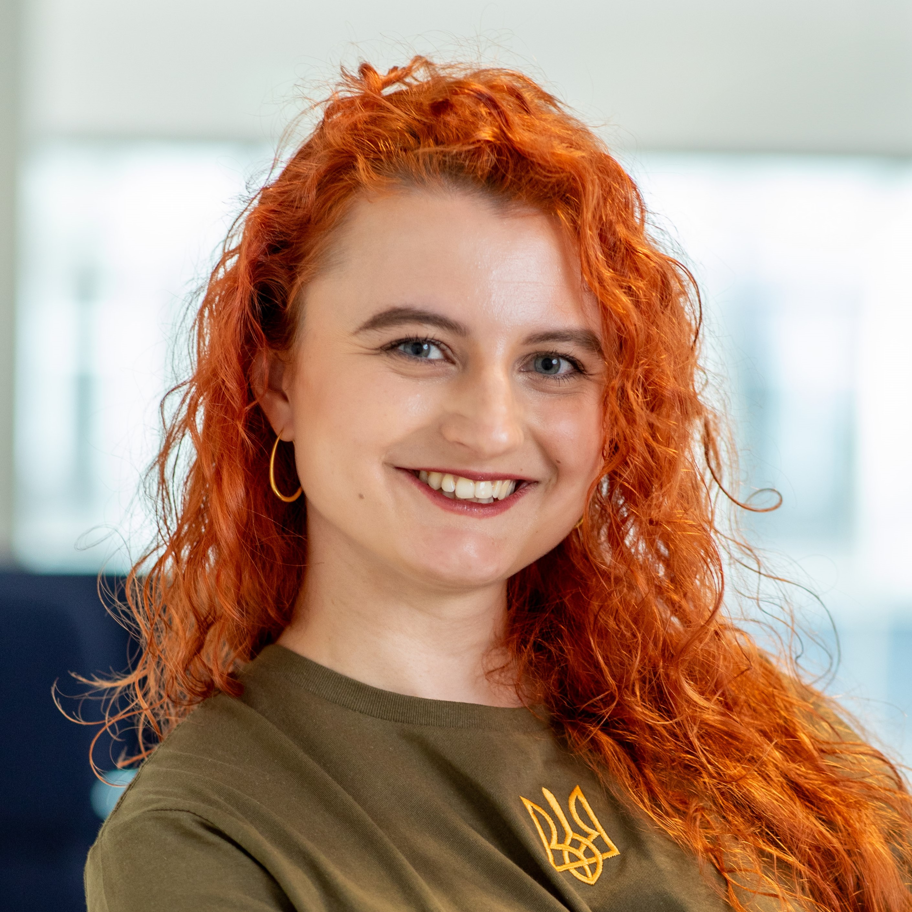
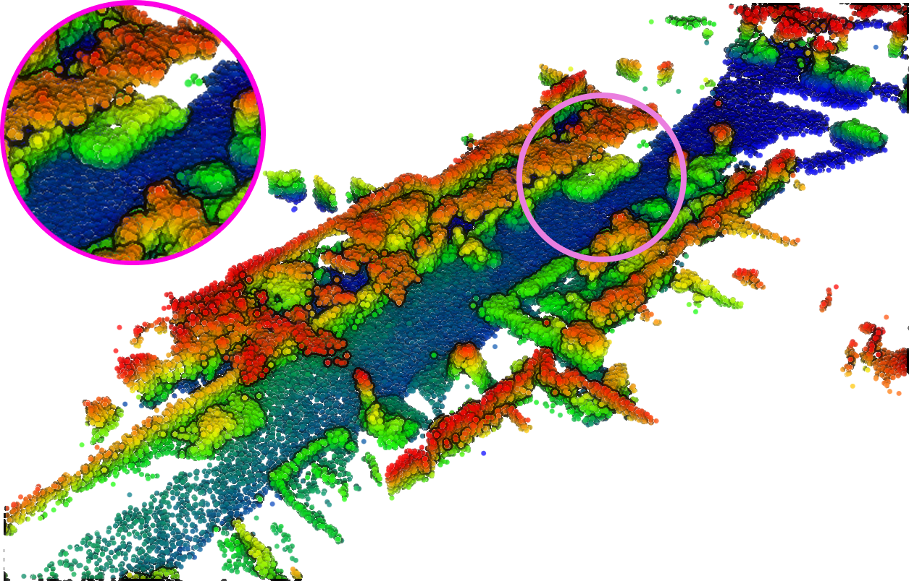
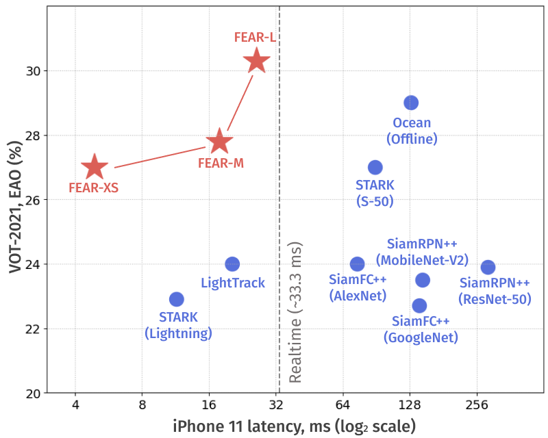
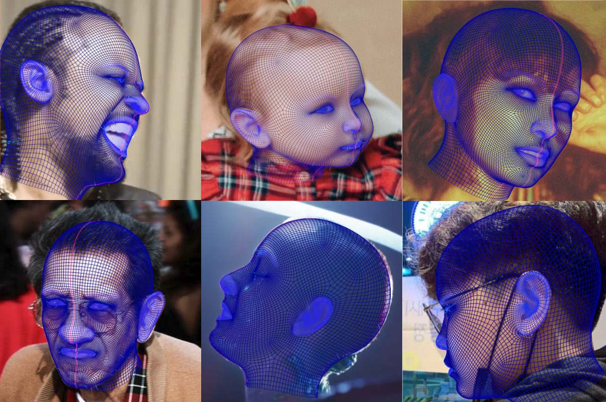
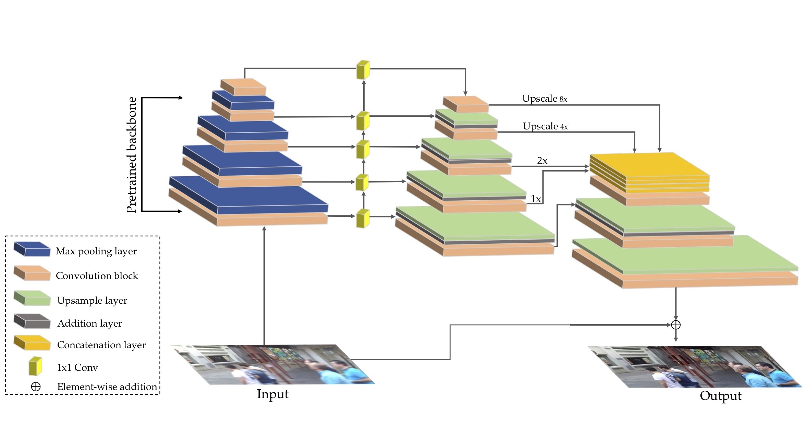
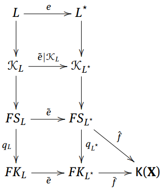

06/2024 Talk at ELLIS Workshop on 3D Computer Vision and Robotics (video).


LiDPM is a diffusion model for scene-level LiDAR completion that leverages a vanilla DDPM avoiding the need for local diffusion approximations.

FEAR is a family of Siamese visual trackers that combine dual-template adaptation, pixel-wise fusion, and efficient backbones to achieve state-of-the-art accuracy and speed, while also introducing a new benchmark for evaluating energy-efficient tracking.

DAD-3DHeads is a large-scale, diverse dataset with over 3.5K 3D head landmarks, and DAD-3DNet is a robust model trained on it for dense 3D head alignment, achieving state-of-the-art results in pose, shape reconstruction, and landmark estimation across multiple benchmarks.

DeblurGAN-v2 is an end-to-end GAN for single image motion deblurring that combines a relativistic conditional GAN, double-scale discriminator, and Feature Pyramid Network to deliver state-of-the-art quality and efficiency across various backbones, enabling real-time performance and broader applicability to image restoration.

The main result of this paper generalizes the famous Kuratowski 14-set closure-complement Theorem to polytopological spaces.
This method introduces a control circuit and neural network pipeline that compresses 3D source field information into compact vector representations over subdivided spaces, enabling efficient field value estimation via a trained encoder-decoder model.
This paper contains the proof of the controlled version of the classical Hahn-Mazurkiewicz Theorem that provides upper and lower bound of the Hölder dimension of a metric Peano continuum as a function of its S-dimension.
Conference Reviewer: IEEE IV 2025, ECCV 2024, CVPR 2023.
Associate Unit Member, ELLIS Associate Unit in Lviv.